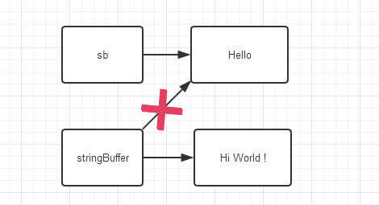

java对象地址传递问题
今天刷题的时候刷到一个基础不扎实的地方，也就是：java对象作为参数传递时的地址传递问题。
我是知道对象是地址传递而基本变量是值传递的，可是我忘了一点，所谓值传递其实是指针指向了地址，所以在函数里改变了这个地址的值，在函数外也相应改变了。
今天做的题是需要按层来遍历一个二叉树的，我设了一个temp的array，想在函数里把它重置为空。函数长这样：1
2
3
4
5private void move(List<TreeNode> dest, List<TreeNode> source){
for (TreeNode node : source)
dest.add(node);
source = new ArrayList<TreeNode>();
}
结果死循环了，debug了才发现，source在函数内被重置为空，在外面并没有，于是我的while list为空的循环就一直跳不出去，所以死循环。
后来想明白了，地址传递传的是指针，而new的时候是把当前的指针指向了另一个地址，而不改变之前的指针所指向的地址的值，所以之前的指针所指向的值仍旧是原来的样子，不会被改变。
哎，基础知识太不扎实啦！
